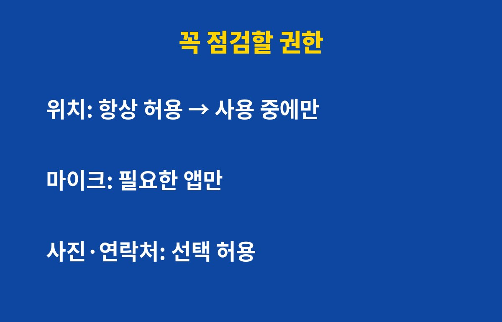
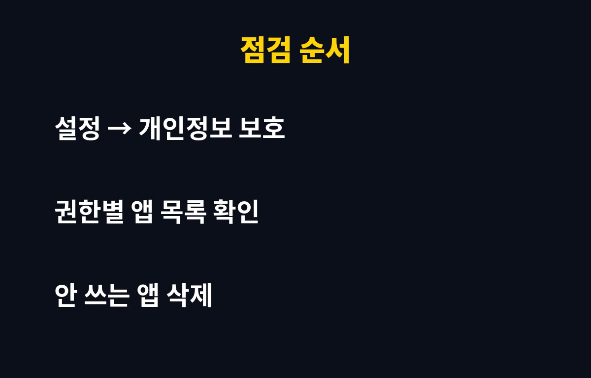

앱 권한 때문에 내 폰 정보가 줄줄 샌다는 말, 과장일까요? 스마트폰을 쓴다면 지금 바로 확인해야 하는 이유가 있어요. 그런데 대부분은 어떤 권한이 켜져 있는지조차 몰라요.
앱을 처음 깔 때 '모두 허용'을 누르는 습관, 다들 있죠? 그때 허용한 위치, 마이크, 사진 접근 권한은 앱을 안 써도 그대로 남아 있어요. 업데이트가 거듭되면서 새 권한이 추가되는 경우도 있고요.
문제는 이 권한들이 해킹이나 스미싱과 만났을 때예요. 권한이 많이 열려 있을수록 한 번 뚫렸을 때 빠져나가는 정보도 많아져요. 그래서 미리 줄여두는 것만으로도 피해를 크게 줄일 수 있어요.

첫째는 위치 권한이에요. '항상 허용'으로 되어 있으면 앱을 닫아도 내 이동 경로가 기록될 수 있어요. 지도·배달 앱이 아니라면 '앱 사용 중에만'으로 바꾸는 게 좋아요.
둘째는 마이크와 카메라예요. 영상통화나 녹음이 필요 없는 앱이 마이크를 쥐고 있다면 꺼두세요. 셋째는 사진·연락처·문자 접근이에요. 이 세 가지는 유출되면 가장 곤란한 정보라서 꼭 먼저 보셔야 해요.
| 권한 | 추천 설정 | 이유 |
|---|---|---|
| 위치 | 앱 사용 중에만 | 이동 경로 추적 방지 |
| 마이크·카메라 | 필요한 앱만 허용 | 무단 녹음·촬영 방지 |
| 사진·연락처·문자 | 선택 허용 또는 끄기 | 민감 정보 유출 방지 |

아이폰은 설정의 '개인정보 보호 및 보안', 갤럭시는 설정의 '보안 및 개인정보 보호'에서 권한 관리자를 열면 돼요. 권한별로 어떤 앱이 쓰고 있는지 한눈에 보여요. 기종과 OS 버전에 따라 메뉴 이름은 조금 다를 수 있어요.
목록을 보다가 '내가 이걸 왜 허용했지?' 싶은 앱이 있다면 바로 권한을 끄세요. 몇 달간 한 번도 안 쓴 앱이라면 아예 삭제하는 게 가장 깔끔해요.
아래 순서대로 하면 처음이라도 금방 끝나요.
마감처럼 날을 정해 두지 않으면 결국 미루게 되니, 오늘 한 번 해 두는 게 좋아요.
흔한 실수는 권한을 한 번 정리하고 끝내는 거예요.
앱을 업데이트하거나 새로 깔면 권한 요청이 다시 생기기 때문에 주기적으로 보는 게 중요해요.
또 '허용 안 함'을 누르면 앱이 안 될까 봐 무심코 '허용'을 누르는 경우가 많은데, 대부분 앱은 권한이 없어도 기본 기능은 잘 돌아가요.
손전등이나 계산기처럼 단순한 앱이 연락처나 위치를 달라고 하면 그 앱은 의심해 보는 게 좋아요.
아이 폰이나 부모님 폰도 같은 순서로 함께 점검해 드리면 가족 정보까지 지킬 수 있어요.
앱 권한을 꺼도 대부분 앱은 그 기능을 쓸 때 다시 허용을 물어봐요.
그러니 불편할까 걱정하기보다 일단 끄고, 필요할 때만 켜는 쪽이 안전해요.
개인정보가 털린다는 이야기는 대부분 이런 기본 설정을 방치했을 때 나와요.
처음 정리할 때는 시간이 조금 걸리지만, 두 번째부터는 금방 끝나요.
정리한 날짜를 달력에 적어 두면 다음 점검 때를 잊지 않아요.
앱을 새로 깔 때는 그 앱이 왜 이 권한이 필요한지 한 번만 생각해 보세요.
이유가 떠오르지 않으면 일단 거절하고 필요할 때 허용하면 돼요.
이 작은 습관이 개인정보를 지키는 가장 쉬운 방법이에요.
첫째, 알림 권한과 '다른 앱 위에 표시' 같은 특수 권한이에요. 이상한 팝업이나 피싱 화면이 뜨는 통로가 될 수 있어요. 둘째, 최근 깔았다가 잊은 앱이에요. 무료 게임이나 유틸리티 앱이 권한을 과하게 요구하는 경우가 많아요.
셋째, 가족 폰이에요. 부모님 폰은 '모두 허용'이 그대로인 경우가 정말 많아요. 이번 주말에 같이 한 번만 봐드리면 좋아요. 10분이면 충분해요.
오늘 알려드린 세 가지만 바꿔도 훨씬 안전해져요. 도움이 됐다면 구독하고 다음 IT 소식도 받아보세요.
기사·공식 발표 기준이며 출시·가격 정보는 바뀔 수 있어요.